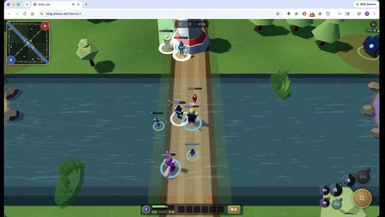

OPEN SOURCE · SELF-HOSTED · MIT
ZhikunCode开源、自托管的 AI 编程工作台
部署一次，浏览器全流程操控。
读项目、改代码、执行命令、运行检查，在同一项任务里持续推进。
选自己的模型，连接自己的工具，把工作留在自己的工程里。

实际交付 02 / 03
同一个工作台，也做交互页面和数据应用
打开成品看效果，再沿着源码、运行记录和报告了解它是怎样做出来的。

FLASK + API + 图表界面 · 2026-07-23
把数据采集、服务和图表接起来
约 92 分钟完成可在本机运行的黄金监控应用：行情轮询、银行估价、央行数据缓存与趋势图。限流后，用户切换模型，在同一逻辑会话继续完成。
银行价格是透明估算，央行覆盖中国；模型切换由用户操作。
继续看其他真实任务
- 办公：五工具 × 六任务办公材料（OSS 镜像）· WorkBuddy 教学材料比较
- 代码审查：17 份报告的 Claude Opus5.5 评估、GPT-6 Astra Ultra 评估 · 2026-09-25 八方审查
- 标准修复任务：SWE-bench Lite 历史报告，2026-05 记录 168 / 300（56.0%）；至少一例轨迹包含对应已合并修复，须结合参考修复暴露与复现限制阅读
工程任务中的四个关键环节
长任务能推进，过程能看见，结果能检查
01 / 上下文与分工
把大任务分开做，再接着整合
摘要和上下文管理支持长任务继续推进；子 Agent 聚焦局部工作，共享项目目录或选择 worktree。主任务读取已有文件、汇总结果并完成整合。
Agent、Task 与接续方式 →02 / 运行与检查
代码写好以后，还能实际跑起来看
运行命令、查看错误，再修改工程；启用 Python 后，可用浏览器和 HTTP 验证检查页面与接口。游戏案例中的堵路和性能问题，就发生在运行后的继续修复阶段。
验证与交付 →03 / 过程与控制
看工具在做什么，随时补充和调整
项目、会话、过程显示与文件修改集中在浏览器。任务运行时能补充要求、响应澄清、查看工具结果和取消任务；授权模式决定哪些操作需要确认。
工作台操作 →04 / 模型与工具
把自己的模型和工作方法接进来
配置多个模型 Provider，用 Markdown Skill 复用流程，通过 MCP 连接工具与服务。需要更深集成时，可研究 Java SPI 插件与运行时源码。
模型配置 → Skill、MCP 与插件 →采用之前
适合想掌握模型、工程和运行方式的团队
工程师可以从真实任务开始试用；技术负责人可以沿部署、安全、扩展和源码入口评估接入成本。软件采用 MIT 许可，模型与外部服务费用由各服务提供方收取。
你来选择运行环境与模型
- 准备 Docker / Compose、可用模型 Key 和可读写的项目目录。
- 基础部署提供 Java 与浏览器工作台；Python 已打包但默认不启动，浏览器验证和部分分析能力需启用它。
- 外部模型、MCP 与发布服务各自有数据流向和接入配置。
把权限和网络边界先设好
- 新会话默认完全访问（AUTO_APPROVE）；按项目调整权限模式。
- Docker 命令沙箱默认关闭，开启后的适用范围取决于可用性与执行路径。
- 远程部署需配置认证、TLS 和网络边界；先在可信项目中验证任务效果。
开始使用
先跑通部署，再完成一个有验收标准的任务
准备 Docker Engine、Compose V2、有效 API Key 和可读写项目目录。首次启动包含镜像与依赖构建，耗时取决于网络和机器。
git clone https://github.com/zhikunqingtao/zhikuncode.git
cd zhikuncode
cp .env.example .env
# 编辑 .env：配置有效模型 Key 与 WORKSPACE_PATH
# 例如 LLM_PROVIDER_DASHSCOPE_API_KEY 或 LLM_PROVIDER_DEEPSEEK_API_KEY
docker compose up -d --build
docker compose logs --tail=100 zhikuncode
curl -fsS http://localhost:8080/actuator/health
01 / 等待服务就绪
健康状态为 UP 后打开 localhost:8080。基础示例在受控网络运行。
02 / 选定工作项目
选择授权目录、可用模型与权限模式，再输入任务与验收要求。
03 / 完成第一项任务
跟随实践指南修改一条业务规则，运行测试，再检查文件差异与交付结果。
README 包含模型配置、Python 启用与排障说明；第一次尝试建议使用单独的项目目录。